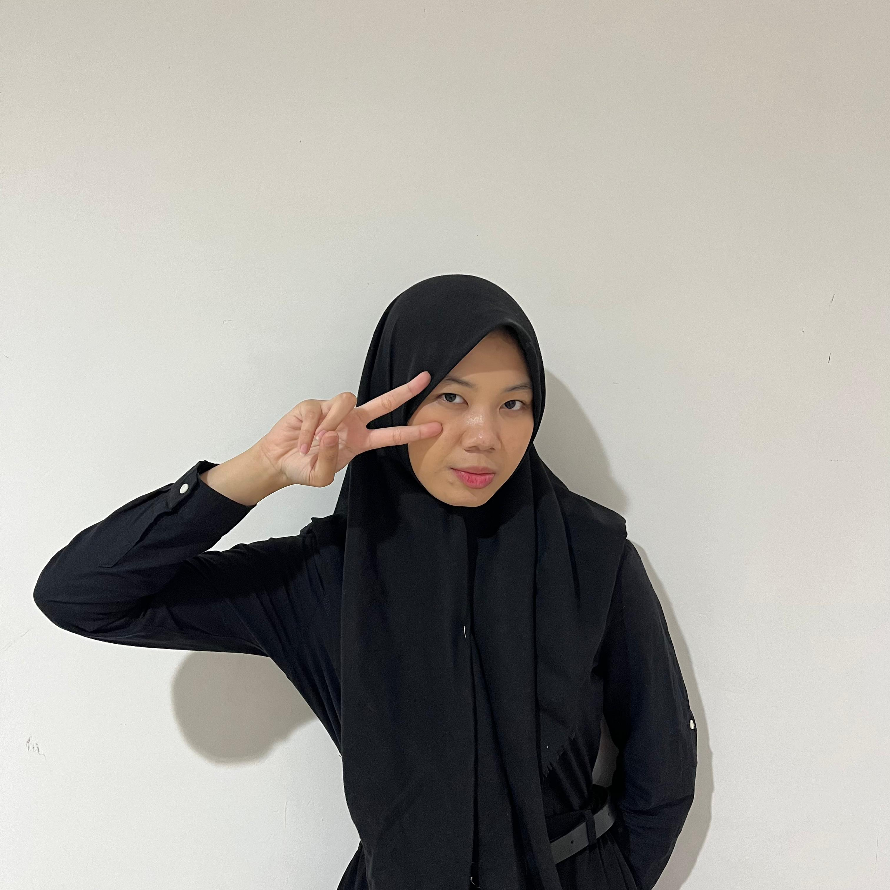

Ryannisa Syarifa Triandini

Saya merupakan mahasiswa semester 5 di Telkom University. Saya sedang menempuh di pertengahan SKS. Saya sangat memerlukan banyak coklat, karena coklat sangat enak dan lembut. Saya sangat suka kucing dan saya sedang berjuang untuk semester 5, wish me luck
Portofolio
Nama = Ryannisa Syarifa Triandini
Umur = 20 Tahun
Email = ryannisaa8604@gmail.com
| Jenjang Sekolah |
Perguruan Tinggi |
Jurusan |
Tahun |
| SD |
SDS Kartini |
- |
2010-2016 |
| SMP |
SMPN 169 Jakarta Barat |
- |
2016-2019 |
| SMK |
SMK Telkom Jakarta |
Rekayasa Perangkat Lunak |
2019 - 2022 |
| Universitas |
Telkom University |
S1 Sistem Informasi |
2022 - Sekarang |
Skill
1. Figma
2. Coding